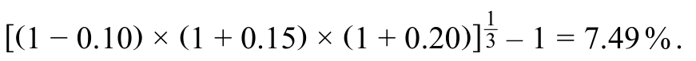
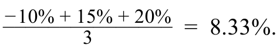
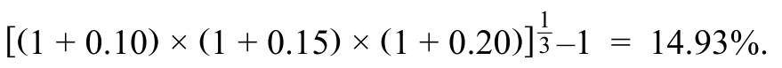

QM-LM01-T001-01课前测试：金融资产与金融工具的收益 · 第 1 题
PRE-TEST: RETURNS OF FINANCIAL ASSETS AND INSTRUMENTS · Question 1
题目与资料 / Question and data
1. SolarTech Innovations的股票总收益如下：
1. SolarTech Innovations’ shares showed the following total returns:
■第1年：−10%
■Year 1: − 10%
■第二年：15%
■Year 2: 15%
■第三年：20%
■Year 3: 20%
在三年的时间里，SolarTech股票的几何年收益率最接近：
Over the three-year period, SolarTech shares had a geometric annual return closest to:
官方答案与解析 / Official answer and explanation
解答
Solution
正确答案是A,7.49%。
The correct response is A, 7.49%.
几何平均收益率准确捕获多个时期的复利兴趣效应：
Geometric mean return accurately captures the compound interest effect over multiple periods:

这种方法解释了多年来收益和损失的复利效应。
This method accounts for the compounding effect of gains and losses over the years.
答案B不正确。
Answer B is incorrect.
它计算算术平均值：
It computes the arithmetic average:

答案C不正确。
Answer C is incorrect.
它错误地对待第一年的负收益：
It treats the negative return during the first year incorrectly:

补充解析 / Supplementary explanation
遇到多年累计收益，先将每一期的“一加收益率”相乘。若题目要累计收益，乘积减一；若要每期平均复利收益，再开期数次方后减一。
Multiply the period growth factors. Subtract one for cumulative return; take the nth root before subtracting one for the compound return per period.
易错点：不要把累计收益再乘以期数当年化收益。对于相同数据，几何平均一般不高于算术平均；只有各期收益完全相同时，两者才相等。
Common pitfall: Do not annualize a cumulative return by multiplying it by the number of periods. The geometric mean is no greater than the arithmetic mean, with equality for identical period returns.
相关知识点 / Related concepts
算术平均与几何平均 / Arithmetic and geometric mean returns
算术平均回答“各期收益率平均是多少”；几何平均回答“以每期同一个收益率复利，什么利率能得到同样的终值”。后者沿着财富实际增减的路径计算。
The arithmetic mean averages period returns. The geometric mean is the constant compound return that produces the same terminal wealth as the actual return sequence.
Rₐ = Σrₜ / n; Rg = [∏(1 + rₜ)]^(1/n) − 1